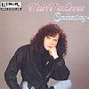

Celtic Lyrics Corner > Artists & Groups > Mairi MacInnes > Causeway > An Eala Bhàn
|  | An Eala Bhàn |
| Credits : | Domhnall Ruadh Choruna; arranged by Mairi MacInnes & Phil Cunningham |
| Appears On : | Causeway |
| Language : | Gàidhlig (Scottish Gaelic) |
| Other Versions : | " An Eala Bhan " on Capercaillie's album Cascade |
| Lyrics : | English Translation : |
| Muladach ged tha mi | Sad I consider my condition |
| 'S mo chridhe 'n sas aig bron | With my heart engaged with sorrow |
| Bhon an uair a dh'fhag mi | From the very time that I left |
| Beanntan ard a'cheo | The high bens of the mist |
| Gleanntannan a'mhanrain | The little glens of dalliance |
| Nan loch, nam bagh 's nan srom | Of the lochans, the bays and the forelands |
| 'S an eala bhan tha tamh ann | And the white swan dwelling there |
| Gach la air 'm bheil mi 'n toir | Whom I daily pursue |
| A Mhagaidh na bi tursach | Maggie, don't be sad |
| A ruin, ged gheibhinn bas | Love, if I should die |
| Co am fear am measg an t-sluaigh | Who among men |
| A mhaireas buan gu brath? | Endures eternally? |
| Chan eil sinn uile ach air chuairt | We are all only on a journey |
| Mar dhithein buaile fas | Like flowers in the deserted cattle fold |
| Bheir siantannan na blianna sios | That the year's wind and rain will bring down |
| 'S nach tog a'ghrian an aird | And that the sun cannot raise |
| Air m'uilinn anns na truinnsichean | Crouched in the trenches |
| Tha m'inntinn ort, a ghraidh | My mind is fixed on you, love |
| Nam chadal bidh mi a'bruadar ort | In sleep I dream of you |
| Cha dualach dhomh bhith slan | I am not fated to survive |
| Tha m'aigne air a lionadh | My spirit is filled |
| Le cianalas cho lan | With a surfeit of longing |
| 'S a' ghruag a dh'fhas cho ruadh orm | And my hair once so auburn |
| A nis air thuar bhith ban | Is now almost white |
| Muladach ged tha mi | Sad I consider my condition |
| 'S mo chridhe 'n sas aig bron | With my heart engaged with sorrow |
| Bhon an uair a dh'fhag mi | From the very time that I left |
| Beanntan ard a'cheo | The high bens of the mist |
| Gleanntannan a'mhanrain | The little glens of dalliance |
| Nan loch, nam bagh 's nan srom | Of the lochans, the bays and the forelands |
| 'S an eala bhan tha tamh ann | And the white swan dwelling there |
| Gach la air 'm bheil mi 'n toir | Whom I daily pursue |